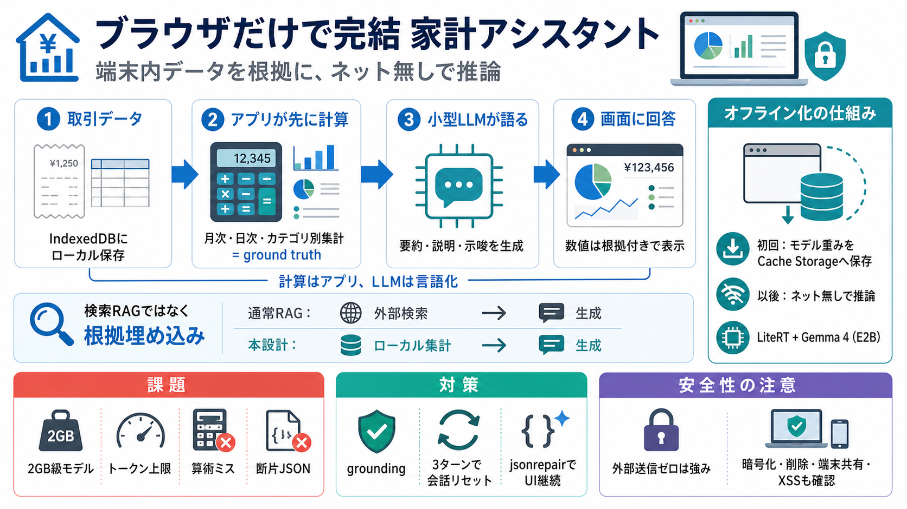

litert-community/gemma-4-E2B-it-litert-lm · Hugging Face
All benchmarks were taken using 1024 prefill tokens and 256 decode tokens with a context length of 2048 tokens via LiteR…

All benchmarks were taken using 1024 prefill tokens and 256 decode tokens with a context length of 2048 tokens via LiteR…
The result of these combined techniques is a lean runtime footprint — for instance, LiteRT-LM successfully runs the ~2.5…
| Parameters | BF16 (16-bit) | SFP8 (8-bit) | Q4_0 (4-bit) | Mobile | Mobile (Text-only) | --- --- --- | | Gemma 4 E2…
| Model | Type | Size (MB) | Details | Device | CPU Prefill (tk/s) | CPU Decode (tk/s) | GPU Prefill (tk/s) | GPU Decode…
## Handling Large Model Downloads One lesson from building with browser LLMs: model loading is not just a runtime probl…